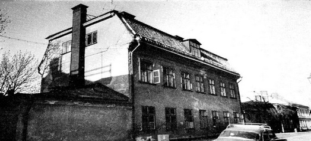
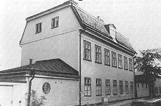
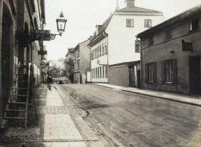
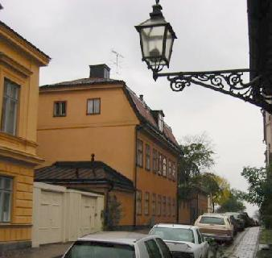

|
2. Fjällgatan 25-29. Schinkelska malmgården
 Schinkelska malmgården 1972 innan byggnaderna längs Fjällgatan renoverades. |
Fjällgatan 25 är det äldsta huset vid gatans norra sida. Det var ett brandskadat envåningshus som sattes i stånd omkring 1740. År 1794 byggdes huset på till sin nuvarande höjd av kommerserådet David Schinkel. Denne var en invandrad tysk, som kom till Sverige sexton år gammal 1759. Han blev snabbt en skicklig köpman inom järn- och rederibranscherna. Han erhöll titeln kommerseråd och adlades 1790 med bibehållet namn. Han skaffade sig malmgården uppe på Stigberget. Huset fick i stort sett sitt nuvarande utseende 1794. Det ligger vackert med sin trädplanterade gård ute på bergskanten. Sidobyggnaderna tillkom vid 1800-talets mitt - den östra förnyad 1938. |
|
När Anna Lindhagen 1913 motionerade om bevarande av
gamla hus var det den Schinkelska malmgården hon i första
hand värnade om. I Tidskrift för hembygdsvård skrev hon 1923: Lyckliga människa som ägt denna malmgård. Lyckliga alla, som där fått bo liksom alla i framtiden som få tjusas av denna gårds osedvanligt stämningsfulla belägenhet ... Schinkel dog 1807 och hans son slösade snabbt bort förmögenheten. Egendomen ägdes därefter av en änkefru J.H. Holmlund som 1847 sålde till kammarrådet Johan Falkman. Hans hustru Jakobina har i sin Minnesbok lämnat en betagande skildring av malmgården. Efter Falkmans kom boktryckaren, bokförläggaren och bokhandlaren Per Gustaf Berg (1805- 1889) och sjökaptenen Victor Kempff, som var gift med Bergs dotter Maria. Berg flyttade till Fjällgatan 25-29 och hade affär och förlag här till 1881. Per Gustaf Berg (1805-1889) var boktryckare, bokförläggare och bokhandlare. Bland hans mest kända utgåvor är Mellins "Svenskt pantheon" och Ferlins "Stockholms stad". Endast 23 år gammal hade Berg startat egen bokhandel vid Stortorget, sedan etablerade han sig som boktryckare och bokförläggare med företag inom Maria församling, han var också en av Svenska förlagsföreningens stiftare. 1857 flyttade han alltså till Fjällgatan och hade förlag och affär där fram till 1881. Han deltog även flitigt i ordenslivet och var kommunalt intresserad. "Han var en borgare av gamla stammen med patriarkaliska grundsatser, mynnande ut i att såväl lärpojkar som gesäller tillhörde familjekretsen". (IsidorAdolf Bonnier) |
 1923  |
|
 |
I En bok om Stockholm har Per Anders Fogelström en initierad skildring om livet på malmgården och vid Fjällgatan byggd på berättelser av kapten Kempffs efterlevande. Senare ägdes husen av grosshandlaren Per Adolf Collijn och efter dennes död 1891 av barnen Collijn bland vilka kan nämnas grosshandlaren och schackspelaren Per Ludvig och teaterdirektören och författaren Gustaf (gift med Anna-Lenah Elgström). År 1899 förvärvade staden den Schinkelska malmgården och inrättade här »Stockholms stads barnhärbärge« avsett »för tillfällig vård av behövande barn.« Senare blev det ett hem för flickor och därefter förfogade Värmland-Dals nation över det gamla huset. I dag finns här bostäder. Fjällgatan 29, som ju tillhört den beskrivna egendomen, uppfördes 1839 som en ekonomibyggnad till det större huset men har senare förändrats till privatbostad, där bodde keramikern Wilhelm Kåge under många år.
|